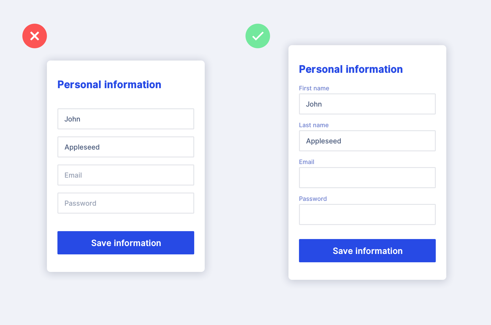
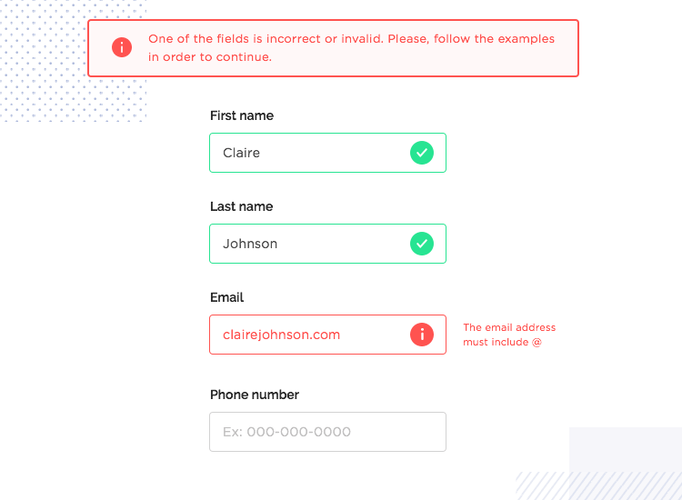

Web Developer Examples and Resouces
Web Forms
When it comes to the overall user experience, there are many aspects of a website that are important. Using web forms is a full-proof way of getting feedback from visitors and prospective clients. It also allows you to establish relationships. Taking the time to perfect these web forms is something that often gets overlooked and results in complex web forms that cause a negative user experience (Puri).
A webform allows visitors to get in contact with you by requesting certain information like an order inquiry or a catalog, which then gets placed into a database. In some instances, information submitted through the webform is transferred straight to the company’s e-mail. Webforms can be made using PHP, HTML, or JavaScript (Puri).
Web forms can make or break your website. A clear and concise web form will increase your chances for success, while a confusing one can impede your efforts. Below I have included steps that will guide you in creating more effective and efficient web forms.
5 Key Elements of a Web Form
Structure - this encompasses the order of fields and the layout. By ordering the form in a logical manner, users will have a much better experience.
Input Fields - these areas ask the user for certain data, ie text fields, password fields, checkboxes, sliders, etc.
Field Labels - tells the user what is required in the input field.
Action Buttons - when the user presses this button, action will occur.
Feedback - this tells the user the result of their input. This feedback can be affirmative “Thank You For Submitting Your Request” or corrective “Oops, an Error has Occurred.” (“5 Tips for Designing the Perfect Web Form | The Manifest”)
Less Is More
Simply put, users don’t enjoy filling out webforms. The number of fields you have plays a crucial factor in the decision a user makes (making a purchase or completing a task), which can ultimately end up in abandoning your website and looking elsewhere. When creating input fields, you should be selective of what you ask your users. It should be kept at a bare minimum so that users are able to achieve their goals quickly instead of getting bored and losing interest.
Sometimes short forms aren’t practical due to the complexity of the service or product, in this case, the best way to tackle these forms would be by using stepped forms. This allows you to break up your form into sections and sometimes different screens. Use radio buttons to help get users through the forms quickly and efficiently. Another thing you may want to consider in more intricate web forms would be including a completeness meter/progress bar, which informs the user how far along in the form they are (“Guidelines for Awesome Web Form Design”).
No Assistance
Since web forms don’t respond to users in a “human” way, sometimes interaction between a user and the webform might feel somewhat one-sided. To eliminate the chances of users feeling confused by your form, designers should provide assistance and inline validation. These two tools help outline what the user needs to do and can point out where and how they went wrong. Assisting a user consists of providing insight by placing hints or notes as they progress through a form. Inline validation, on the other hand, is a type of response the form has whenever the user inputs incorrect data. This can be achieved through different ways, most commonly being a red text placed under the pertaining entry field, indicating that the data is invalid. Implementing these elements alerts the user they have made a mistake on the spot (“Guidelines for Awesome Web Form Design”).
The ultimate web form is created by initiating a user’s action and anticipating better user participation. Filling out a webform shouldn’t be a tedious or daunting task, that’s why it’s so important that it is concise and simple. There are many things designers can do in order to accomplish this. By at least following these basic webform guidelines, you will be on your way to making your users happy.